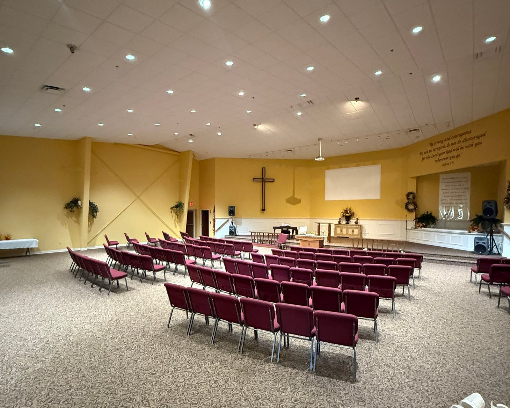
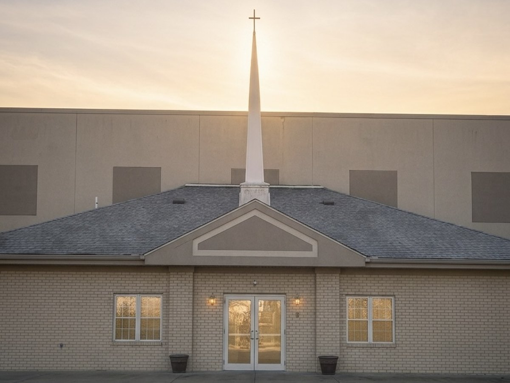

About us
Welcome home
We're so glad you're here. Whether you've followed Jesus for years, are just starting to ask questions, or aren't sure what you believe, there's a place for you at Avon Community Church of God.
We'd love to meet you, hear your story, and share a meal or a cup of coffee. Church was never meant to be a building you visit. It's a family you belong to, and we'd be honored to have you as part of ours.
With love,
Pastor Larry & Heather Vinson and family

Our mission
Know Him and Make Him Known
Everything we do comes back to two things.
Making Jesus known
We believe the good news of Jesus is the best news there is, and we want everyone in Avon and beyond to hear it. We share it in our services, in our homes, and in everyday conversations with the people around us.
Knowing Him deeper
Following Jesus is a lifelong journey, and no one should walk it alone. We meet on Sundays to worship, on Wednesdays to study the Bible, and throughout the week to help each other grow to look more like Him each day.
Real people, real family
You won't find perfect people here. You'll find honest ones. We're building a church where it's safe to be real, where people can share what they're struggling with and not just what's going well. We treat each other as family, and we see the people in our community as neighbors, not strangers.
A little different, in a good way
We're part of the Church of God (Anderson, Indiana), a movement of churches focused on Christian unity and on following the Bible together, and we partner with other churches across the state through Indiana Ministries. Two things set us apart:
If you belong to Jesus, you belong here.
We don't keep a membership roll. Faith in Christ is what makes someone part of God's family, and that's all it takes to be part of ours.
The Bible is our guide.
We don't hold to a man-made creed. We let Scripture speak for itself and seek to follow it together.
Our story
A new chapter
Avon Community Church of God has been serving Avon since 1966. We'll be honest: we haven't always been as connected to our community as we want to be. But we're stepping into a new chapter, with fresh excitement about serving Jesus and loving our neighbors in Avon. We'd love for you to be part of what God does next.

Come see for yourself
Sundays at 10:00 AM at 2309 N Dan Jones Rd, Avon. Come as you are.